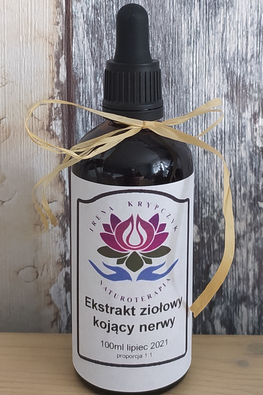

🌿🌿Nalewka Ekstrakt Ziołowy Kojący Nerwy🌿🌿
Któż z Nas nie jest narażony na stresujące sytuacje czy to w pracy , kłótnia z dzieckiem, z partnerem/partnerką czy inną bliską nam osobą
Tak naprawdę nie da się całkowicie wykluczyć z naszego życia stresu ALE możemy złagodzić go lub zmniejszyć do minimum poprzez pozytywne nastawienie oraz odpowiednia suplementację adaptogenem‼️
Niestety żyjemy w trudnych czasach szczególnie teraz w trakcie pandemii strachu oraz medialnej propagandzie, szargają nami skrajne emocje tj. strach, lęk ,złość, bezsilność itp.😲
Dlatego z myślą o sobie a szczególnie dla moich klientów 🤗 stworzyłam nową nalewkę ziołową w formie ekstraktu 1:1, która zawiera 2 najmocniejsze adaptogeny tj.
🌱Tarczyca Bajkarska- ma działanie uspokajające, przeciwdrgawkowe , przeciw lękowe ,przeciwwirusowe, przeciwbakteryjne, przeciwgrzybiczne oraz przeciwnowotworowe.
🌱 Różeniec Górski- wspiera walkę ze stresem, a także wspomaga pamięć i koncentrację, Ma działanie: przeciwzapalne, przeciwdepresyjne, adaptogenne, przeciwwirusowe i antybakteryjne. Korzystnie wpływa na układ nerwowy, układ krążenia i wątrobę
Ponadto zawiera:
🌱Kozłek Lekarsk- skutecznie zmniejsza poziom lęku, obniża napięcie psychiczne i redukuje uczucie niepokoju.
🌱Zeń- szeń Syberyjski- działa na organizm wielokierunkowo wpływa na ośrodkowy układ nerwowy, poprawiając zdolności koncentracji i zapamiętywania. Oprócz tego chroni on organizm przed osteoporozą, obniża poziom cholesterolu, a także ma właściwości przeciwcukrzycowe oraz przeciwnowotworowe. Pobudza on układ odpornościowy do działania, chroniąc przed drobnoustrojami i wirusami,
🌱Owoc Bzu Czarnego- bogate źródło Witaminy C, która wspomaga naszą odporność. Działa przeciwgorączkowe, przeciwbólowe, moczopędne i odtruwające. Ponadto bakteriobójcze i wirusobójcze oraz oczyszcza krew z toksyn.
🌱Owoc Głogu- chroni i wzmacnia serce, obniża poziom cholesterolu oraz obniża ciśnienie krwi.
Adaptogeny działają na organizm na poziomie komórkowym, wspomagając jego odporność na stres, zarówno ten psychiczny jak i środowiskowy (wywołany np. niewłaściwą dietą, wolnymi rodnikami, promieniowaniem, zanieczyszczenieniami powietrza). Wykazują potencjał wspomagający ochronę przed stresem oksydacyjnym. Dzięki temu stopniowo podtrzymują naturalną odporność organizmu oraz znacząco pozwalają zachować młody wygląd. Systematycznie stosowane, nie tylko wspomagają ogólną kondycję i wytrzymałość ciała, ale wspomagają też regenerację organizmu. Wszystkie te efekty opierają się na naczelnej zasadzie działania adaptogenów – utrzymywaniu stanu równowagi. To ona pozwala zachować zdrowie, sprawność i dobre samopoczucie‼️ ‼️
Jak widzicie jest to petarda wśród moich nalewek😍💪💪
Nalewka jest bardzo wydajna przyjmuje się ja 1-2 razy dziennie(w zależności od potrzeb) po 20 kropli 💚💚💚
Zapraszam do składania zamówień bo jesień tuż tuż więc trzeba szczególnie zadbać oraz wzmocnić organizm 🤗😉
